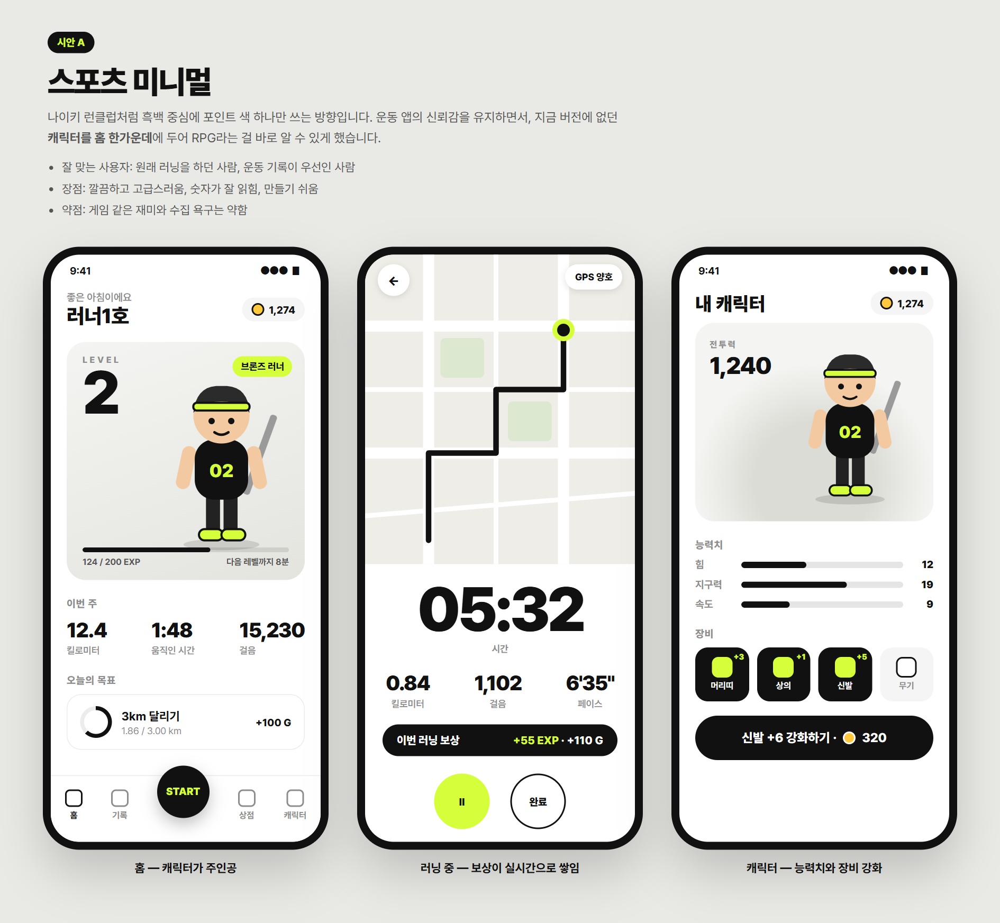
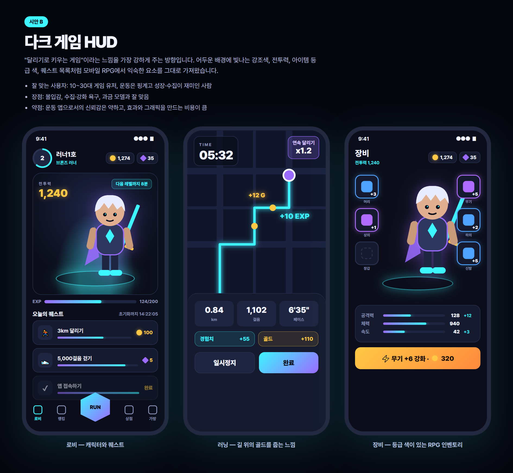
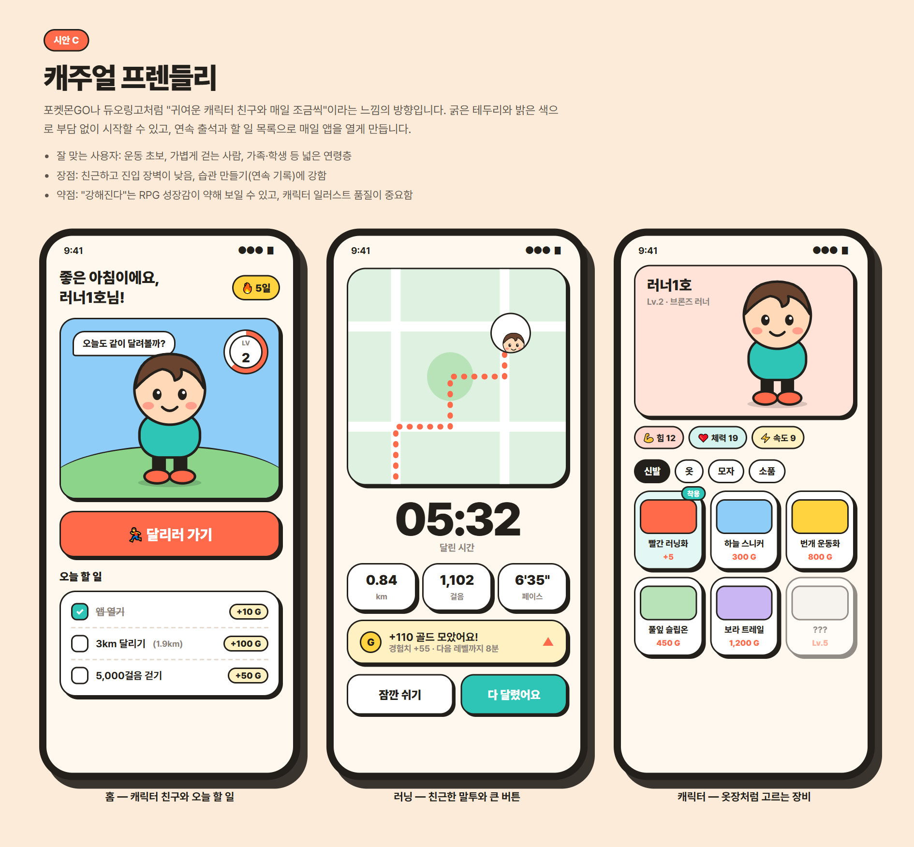

달리랑 RPG 디자인 시안
같은 기능(홈 · 러닝 중 · 캐릭터)을 세 가지 분위기로 그려 봤습니다. 캐릭터 그림과 지도는 자리를 보여주기 위한 임시 그림이고, 실제 앱에서는 3D 캐릭터와 실제 지도가 들어갑니다. 카드를 누르면 시안별 설명과 화면 3개를 크게 볼 수 있습니다.

시안 A
스포츠 미니멀
흑백과 형광 연두색. 운동 앱의 신뢰감 위에 캐릭터를 올린 방향.

시안 B
다크 게임 HUD
어두운 배경과 빛나는 강조색. 퀘스트·전투력·아이템 등급으로 게임 느낌을 강하게.

시안 C
캐주얼 프렌들리
밝은 색, 굵은 테두리, 귀여운 캐릭터 친구. 매일 여는 습관 앱 느낌.
한눈에 비교
| A 스포츠 미니멀 | B 다크 게임 HUD | C 캐주얼 프렌들리 | |
|---|---|---|---|
| 첫인상 | 세련됨, 운동 앱 | 모바일 RPG 게임 | 친근함, 귀여움 |
| 주 사용자 | 원래 달리던 사람 | 10~30대 게임 유저 | 운동 초보, 넓은 연령층 |
| RPG 성장감 | 보통 | 매우 강함 | 약함~보통 |
| 운동 기록 가독성 | 매우 좋음 | 보통 | 좋음 |
| 매일 열게 만드는 힘 | 보통 (오늘의 목표) | 강함 (퀘스트·보상) | 강함 (연속 출석·할 일) |
| 만드는 비용 | 낮음 | 높음 (효과·아이템 그래픽) | 중간 (캐릭터 일러스트) |
| 3D 캐릭터와 어울림 | 좋음 | 매우 좋음 | 2D 일러스트가 더 어울림 |
검토하실 때 알려주세요
- 셋 중 가장 가까운 방향 (섞어도 됩니다. 예: "A 화면 구성 + B의 퀘스트")
- 시안마다 좋은 점과 거슬리는 점
- 홈 화면에서 꼭 보여야 할 것과 빼도 되는 것
- 하단 탭(홈 · 기록 · 시작 · 상점 · 캐릭터) 구성이 맞는지